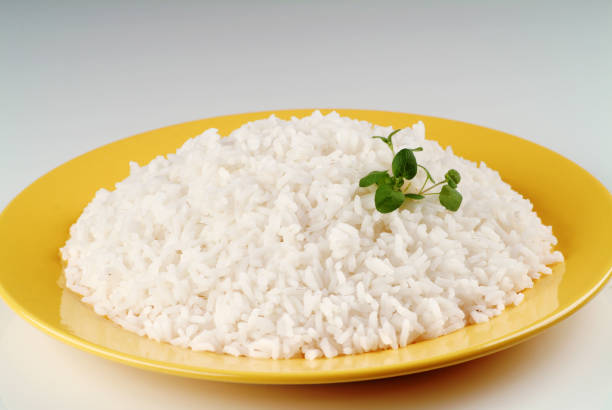

Home Page
How to prepare rice!

Description
Rinse the rice, combine all the ingredients and cook
Ingredients Used
- One cup of Rice
- Two cups of water
- 1 tbsp butter
- Kosher salt
Steps
-
In a medium saucepan over medium heat, bring water to a boil. Add rice,
butter, and a large pinch of salt.
-
Bring pan back to a simmer then lower heat and cook, covered, 18
minutes, or until rice is tender and water is absorbed.
-
Remove from heat and let sit, covered, 5 minutes, then fluff with a fork
and serve.
Home Page